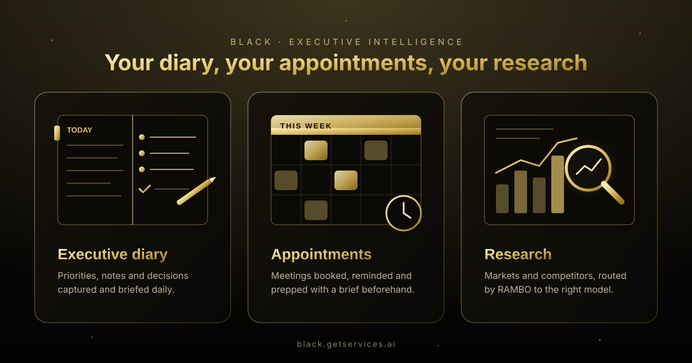

GetServices.ai, AI Studio and BLACK: The Complete Guide to Agentic AI and the RAMBO Router (2026)
Most businesses don't need another AI tool. They need AI that does the work, explains what it did, and uses the right model for each job. That's the idea behind three connected products from GetServices.ai: the GetServices.ai marketplace of done-for-you AI services, GetServices AI Studio with its assistant ROMEO, and BLACK, the executive edition powered by the RAMBO router. This guide explains what each one does, how they fit together, and which one to start with.
Why businesses are stuck between AI tools
In the last two years, the number of capable AI models has exploded. GPT is excellent at structured reasoning and code. Claude writes clearly and handles long, nuanced documents. Gemini is strong at research and synthesis across large amounts of information. Grok is tuned for fast-moving signals and emerging topics. Perplexity answers with live web sources. Each is good at something, and none is best at everything.
For a business owner or executive, that creates three practical problems:
- Model juggling. Teams pay for several subscriptions, copy the same brief between tabs, and still aren't sure which answer to trust.
- The "last mile" gap. A chatbot can suggest a marketing plan, but someone still has to build the landing page, write the posts, schedule them and measure the results.
- Invisible in AI search. Customers increasingly ask ChatGPT, Google AI Mode or Perplexity for recommendations. If those assistants don't mention your business, you lose the lead before it reaches your website.
GetServices.ai approaches these problems as one system rather than three separate tools. The marketplace provides done-for-you agents for routine operations. AI Studio is the place where you ask for work and watch it get done. BLACK sits on top for leaders who want the best model for every question, plus a second (and third) opinion when the stakes are high.
GetServices.ai: AI services that ship in days, not months
GetServices.ai is an AI services marketplace for businesses. Instead of selling a blank AI platform and leaving you to configure it, it offers more than 50 done-for-you AI solutions, from intelligent chatbots to full AI Pods, with 20+ business integrations. The stated goal is to have an agent live in about 24 hours.
What is an AI Pod?
An AI Pod is a pre-built, role-specific AI worker. Rather than a general assistant, each pod is designed around one job and its workflows. Examples on the marketplace include pods for:
- Tax and accounting: client intake, document collection and deadline tracking.
- Customer success: onboarding, NPS surveys, health scoring, churn prevention and renewal reminders.
- Marketing: campaigns, lead nurturing, content scheduling, A/B testing and ROI reporting.
- Scheduling: bookings, reminders, rescheduling, no-show recovery and waitlists.
- Security: real-time threat monitoring, anomaly detection and automated incident response.
Pods are coordinated by an orchestration layer that routes tasks between pods, manages human-in-the-loop checkpoints, and keeps an audit trail of every action. That last point matters for regulated industries: an agent that acts on your behalf should always be able to show what it did and why.
Who it's for
The marketplace is aimed at small and mid-sized businesses and regulated industries that want the results of AI automation without hiring an AI team. You can start on your own, or book a call and have GetServices.ai's forward-deployed engineers set things up with you. A free AI strategy assessment is available to help decide where AI will actually save time.
GetServices AI Studio and ROMEO
GetServices AI Studio is the operating environment for everything GetServices.ai builds. Its centre is ROMEO, the universal AI interaction layer. You describe what you need in plain words, the way you'd brief a colleague, and ROMEO plans the work, runs it and shows its progress live.
What you can ask ROMEO to do
- Build an app or website. Describe the idea; ROMEO generates a working web app and shows each page as soon as it's ready.
- Write content. Blog posts, landing page copy, emails and social posts, aimed at search engines and AI answer engines.
- Make a video. Turn a script or idea into a short video.
- Improve your AI visibility. Run an ATLAS AEO scan and let the agents fix what's missing.
- Automate recurring work. Schedule tasks such as weekly reports, content calendars or monitoring.
- Developer utilities. Code formatting and validation for languages and formats like Python, JavaScript, JSON and XML.
How a request flows through Studio
Studio follows a simple loop: Ask → Form → Execute → Observe → Adapt → Verify → Outcome. You ask. ROMEO forms a plan and shows it. It executes step by step while the Live Activity panel shows exactly what's happening. If something fails, it adapts or recovers. The finished result is verified and saved as an outcome you can reuse, so useful work accumulates instead of disappearing into a chat history.
You stay in control
Studio runs on credits rather than a confusing feature matrix. You can start with 50 free credits and no card. Any step that will spend credits asks first, and failed steps are refunded. Options are shown as clickable buttons as well as chat, so you rarely need to type long instructions, and you approve every step before anything goes live.
ATLAS AEO: being found in AI answers
Search is changing. Search engine optimisation (SEO) helps you rank in classic search results. Answer engine optimisation (AEO) helps AI assistants mention and cite your business when people ask them for recommendations. Both now matter.
ATLAS AEO is GetServices.ai's flagship visibility product, and it's available inside Studio. ATLAS checks whether ChatGPT, Google AI Mode, Perplexity, Gemini and Claude mention and cite your business, produces an AI Visibility score, and shows exactly what to fix: missing structured data, thin answers to common questions, weak entity signals, or content that AI systems can't easily quote. You can run a first scan free with no card.
Because ATLAS lives inside Studio, the fix doesn't stop at a report. You can ask ROMEO to write the missing FAQ content, add schema markup, or publish supporting articles, and then re-scan to measure the change.
BLACK: the executive edition
BLACK is the premium, dark-and-gold executive edition of GetServices.ai, available at black.getservices.ai. Where Studio is built for doing work, BLACK is built for thinking and deciding: strategy, market analysis, executive briefings, competitive research and the documents that come out of them.
BLACK's promise is simple: one prompt, multiple intelligence engines. You don't pick a model, write a special prompt, or switch tabs. BLACK evaluates the request and sends it to the model best suited to it, with automatic fallback if a provider is unavailable.
Who BLACK is for
- Executives and founders who want board-ready answers fast.
- Operators turning objectives into structured workflows and actionable plans.
- Strategy and research teams doing market analysis, opportunity identification and investment-grade research.
- Anyone tired of model-hopping who wants the best available model without managing several AI subscriptions.
Working modes
The BLACK Console offers four modes so you can trade speed for depth: Fast for quick answers, Smart for routed everyday work, Deep for harder reasoning, and Executive for decisions that deserve several independent opinions. Every answer comes with a routing trail, so you can see which engine handled it and why.
How RAMBO routes every request
RAMBO stands for Request Analysis & Model Brokering Orchestrator. It's the routing engine underneath BLACK, and it does three jobs.
1. Request analysis
RAMBO first classifies the task. Is this code? Long-form writing? Strategy? Market research that needs current sources? Data extraction? The classification uses deterministic rules, which means the same kind of request is handled the same way every time, and the reason for each routing decision can be shown to you.
2. Model brokering
Once it knows the task type, RAMBO picks the engine whose strengths fit best:
| Task type | First choice | Why |
|---|---|---|
| Code, automation, structured analysis | GPT | Strong step-by-step reasoning and code generation |
| Strategy, writing, executive communication | Claude | Clear long-form writing and careful planning |
| Market research, competitors, news | Perplexity, then Grok | Live web sources and fast-moving signals |
| Extraction, synthesis of large inputs | Gemini | Handles large, information-dense material well |
3. Orchestration and fallback
If the chosen provider is slow, rate-limited or down, RAMBO automatically falls back to the next best engine and records that it did. You still get an answer, and the routing trail tells you which engine produced it. Providers that are failing repeatedly are skipped for a while, so one outage doesn't slow every request.
The practical effect is that you stop thinking about models at all. You write the brief; RAMBO handles which engine answers it.
Executive Mode and disagreement detection
For most questions, one well-chosen model is enough. For decisions that matter (a pricing change, a market entry, a hire, an investment) a single AI answer can be confidently wrong. Executive Mode is BLACK's answer to that risk.
- Parallel analysis. Your brief goes to up to three independent models at the same time.
- Disagreement detection. Material conflicts between their answers are flagged rather than smoothed over. If one model says a market is growing and another says it's contracting, you see that.
- Transparent synthesis. One executive answer is written from the candidates, and every original answer plus the routing trail is available on demand.
This mirrors how good leaders already work: ask several advisers, notice where they disagree, and dig into the disagreement before deciding. BLACK just does it in seconds.
Diary, appointments and research: an executive's day

An executive's day usually comes down to three things: knowing what matters today, being in the right meetings, and having the facts before every decision. GetServices.ai covers each one with the layer that suits it best.
- Research: BLACK handles market, competitor and industry research. RAMBO routes it to Perplexity or Grok for current sources, and Executive Mode cross-checks the conclusions that matter.
- Appointments: the scheduling AI Pod on GetServices.ai books meetings, sends reminders, handles rescheduling and recovers no-shows, so your calendar runs without back-and-forth emails.
- Executive diary: a daily diary of priorities, notes and decisions is coming to BLACK, so each morning starts with a clear brief of what needs your attention.
How the three products work together
It helps to think of GetServices.ai as layers:
| GetServices.ai marketplace | AI Studio (ROMEO) | BLACK (RAMBO) | |
|---|---|---|---|
| Main job | Done-for-you AI agents and pods | Ask for work and watch it get done | Executive thinking, research and decisions |
| Best for | Ongoing operations: support, marketing, scheduling | Apps, content, video, AEO, automation | Strategy, analysis, briefings, high-stakes questions |
| How you use it | Hire a pod; it runs in the background | Chat or click options; approve each step | One brief; pick Fast, Smart, Deep or Executive |
| Models | Chosen per pod | Chosen per task | GPT, Claude, Gemini, Grok, Perplexity via RAMBO |
| Where | getservices.ai | studio.getservices.ai | black.getservices.ai |
A realistic week might look like this. On Monday, a founder asks BLACK in Executive Mode whether to launch a new service line, and sees that two models agree on demand but disagree on pricing. On Tuesday, she asks ROMEO in Studio to build a landing page for the new service and write three articles aimed at the questions buyers ask AI assistants. On Wednesday, ATLAS re-scans and shows the business now appearing in more AI answers. From then on, a marketing pod runs the nurture campaign and a scheduling pod books the calls. Each layer does what it's best at, and nothing needs to be copied between disconnected tools.
Which one should you start with?
- You want routine work off your plate (support, bookings, follow-ups): start with an AI Pod on GetServices.ai.
- You want to build or publish something (an app, a website, content, a video): start in AI Studio with the free credits.
- You're not showing up in ChatGPT or Google AI answers: run a free ATLAS AEO scan, then fix the gaps in Studio.
- You make decisions for a business and want the best model for every question, plus a second opinion on the big ones: unlock BLACK.
How to write a great brief for BLACK
RAMBO removes the need for prompt engineering, but a clear brief still produces a sharper answer. A good executive brief has four parts:
- The decision or goal. "Decide whether to open a second location in Boston in 2027."
- Context only you know. Current revenue range, margins, team size, constraints and what you've already ruled out.
- What a good answer looks like. "A one-page recommendation with the three biggest risks and the numbers I'd need to check."
- The stakes. If the decision is expensive or hard to reverse, switch to Executive Mode so several models weigh in.
Here's an example. A brief like "Compare the US market for AI scheduling tools for dental clinics, list the top competitors with their positioning, and tell me where a new entrant could win" is classified as market research. RAMBO sends it to Perplexity for live sources, falls back to Grok if needed, and the routing trail shows which engine answered. Ask the follow-up, "Now write the investor summary," and the same conversation is routed to Claude for the writing.
An AEO checklist you can run in Studio
If you want AI assistants to recommend your business, these are the steps that tend to matter most. Each one can be requested from ROMEO in a single sentence:
- Answer the real questions. Publish clear, direct answers to the questions buyers ask, in the first two sentences of each section.
- Add structured data. Organization, Product or Service, FAQPage and Article schema help AI systems understand who you are and what you offer.
- Be consistent everywhere. Your name, address, services and descriptions should match across your site, profiles and directories.
- Show evidence. Specific facts, examples, comparisons and up-to-date information are easier for AI answers to quote than vague claims.
- Make it crawlable. A clean sitemap, a sensible robots.txt and fast, readable pages help both search engines and AI crawlers.
- Measure and repeat. Re-run ATLAS after each round of changes and keep what moves the score.
Control, safety and transparency
Agentic AI is only useful if you can trust what it does. Across the three products, a few principles are consistent:
- Human in the loop. Studio asks before spending credits or publishing anything, and pods include checkpoints for actions that need a person's sign-off.
- Audit trails. Pods log their actions, Studio shows live activity and execution history, and BLACK shows the routing trail for every answer.
- No hidden disagreements. BLACK's Executive Mode surfaces conflicts between models instead of hiding them behind one confident paragraph.
- Keys stay server-side. Model provider keys live on the server, never in the browser.
- Graceful failure. RAMBO falls back when a provider fails, and Studio refunds credits for failed steps.
Glossary
- Agentic AI
- AI that doesn't just answer but plans and carries out multi-step work, such as building a page, publishing it and checking the result.
- AI Pod
- A pre-built, role-specific AI worker on GetServices.ai, such as a marketing, scheduling or customer success pod.
- ROMEO
- The AI interaction layer in GetServices AI Studio that turns plain-English requests into planned, visible work.
- ATLAS AEO
- GetServices.ai's AI visibility product, which measures and improves how often AI assistants mention and cite your business.
- RAMBO
- Request Analysis & Model Brokering Orchestrator: the router behind BLACK that classifies each request and brokers it to the best-suited model.
- Routing trail
- The record BLACK keeps of which engine answered, why it was chosen, and any fallback that happened.
- Executive Mode
- BLACK's multi-model mode that compares independent answers and flags disagreements before giving one synthesis.
Frequently asked questions
What is GetServices.ai?
GetServices.ai is an AI services marketplace that gives businesses more than 50 done-for-you AI solutions, including chatbots and role-specific AI Pods for support, marketing, scheduling, tax and security, usually live within about 24 hours.
What is GetServices AI Studio?
GetServices AI Studio, at studio.getservices.ai, is the workspace where you ask ROMEO in plain English to build apps and websites, write content, make videos, improve AI search visibility and automate tasks. You approve each step, and it starts with 50 free credits.
Who is ROMEO?
ROMEO is the AI interaction layer inside GetServices AI Studio. It understands your request, plans the work, runs it while showing live activity, and saves the result as a reusable outcome.
What is BLACK by GetServices.ai?
BLACK is the premium executive edition of GetServices.ai at black.getservices.ai. It routes each prompt to the best of GPT, Claude, Gemini, Grok or Perplexity, and its Executive Mode compares several models and flags where they disagree.
What does RAMBO stand for?
RAMBO stands for Request Analysis & Model Brokering Orchestrator. It is the routing engine behind BLACK: it classifies each request, picks the best-suited AI model, and falls back to another model automatically if a provider fails.
Which AI models does BLACK use?
BLACK routes across GPT, Claude, Gemini, Grok and Perplexity. Code and structured analysis go to GPT, strategy and writing to Claude, live market research to Perplexity and then Grok, and extraction and synthesis to Gemini.
What is Executive Mode?
Executive Mode sends one brief to up to three models in parallel, detects material disagreements between their answers, and writes a single executive answer while keeping every candidate answer and the routing trail available.
What is AEO and why does it matter?
AEO, or answer engine optimisation, is the practice of making your business easy for AI assistants such as ChatGPT, Google AI Mode, Perplexity, Gemini and Claude to mention and cite. ATLAS AEO measures this visibility and shows what to fix.
How do I get access to BLACK?
Open black.getservices.ai and choose Unlock BLACK, or use the Black Edition button under ROMEO in GetServices AI Studio. Access currently uses an access code.
Think bigger. Decide faster. Execute smarter.
Start with the layer you need today, and add the others when you're ready.